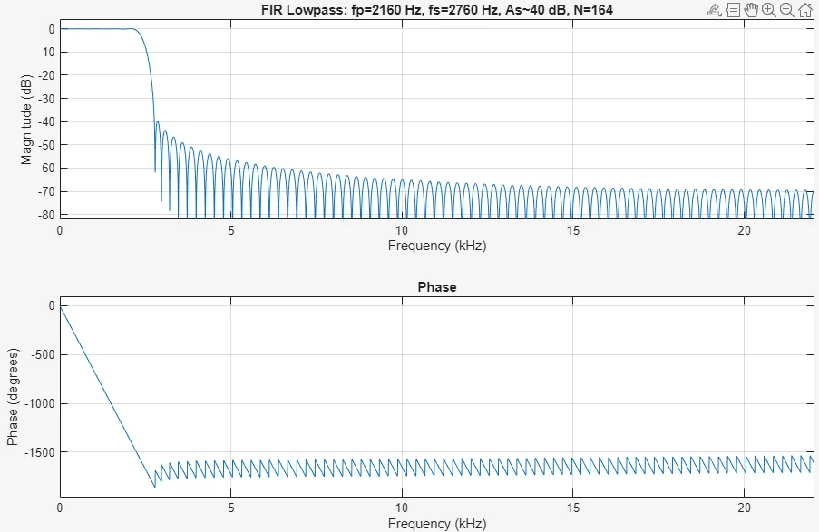
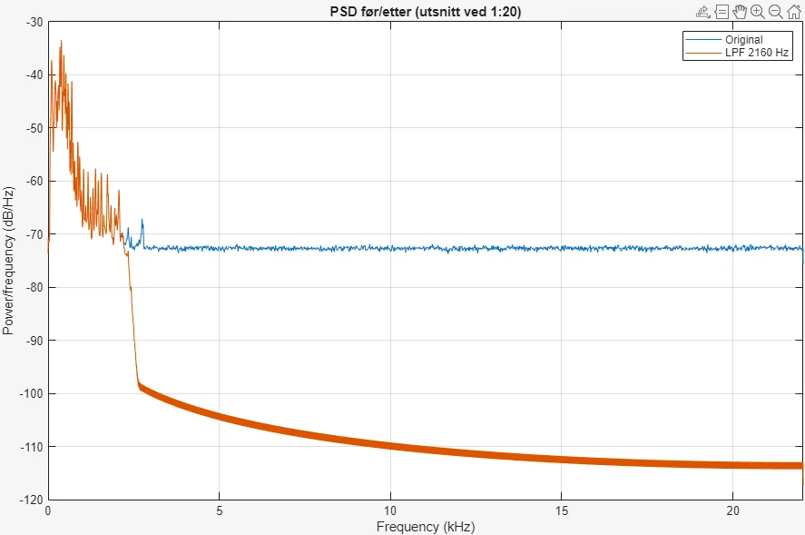

DP9 FIR filter
FIR low-pass filter for noise reduction in audio: verified in MATLAB, with spectrum analysis and implementation on a microcontroller.

Contents
- Theory on LTI systems, convolution, frequency response and linear phase.
- The filter was verified in MATLAB, both as frequency response and as power spectrum before and after filtering.
- Implemented on a microcontroller, with an assessment of filter order against processing time.
Figures



